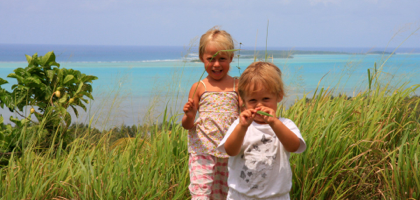

Cook Island

Forhåbentlig på gensyn
søndag den 30. marts 2008

Så har vi tilbragt 14 dejlige dage her på de små øer midt i Stillehavet. Cook Island består af 15 øer hvoraf nogle er ubeboede. Der bor ca. 18.000 mennesker i alt på et landareal på 24.000 hektar, men Cook Islands samlede areal er på samme størrelse som Vesteuropa. Det tager ca. 4 timer at flyve fra Rarotonga i syd til de nordlige øer, og der er ikke jævnlige flyforbindelser.
På hovedøen Rarotonga bor der 12.000, så resten af øerne er ret sparsomt befolkede.
Air Newzealand er det eneste flyselskab, der flyver hertil, og derfor er det begrænset hvor mange turister, der kommer.
Så vil I til et sted uden store hotelkæder, med en fantastisk glad befolkning og smuk natur kan vi virkelig anbefale at tage til Cook Islands. Tiden går sin egen gang i dette lille hjørne af verden. Søndagen er stadig helt hellig, der går ingen fly til de små øer, og først om eftermiddagen må der flyves fra Rarotonga. Efter at have læst den lokale avis, er det, som folk herude går mest op i, en netop indført lov om påbud af styrthjelme. Da man kun må køre max 40 km i timen, er mange imod loven, som de mener er et indgreb i deres personlige frihed. De fleste uheld sker om fredagen, der er den store festdag, og hospitalet har da også indført egenbetaling for skader, der skyldes alkohol.
Nu siger vi så farvel til dette paradis, hvor familien ligger begravet i baghaven, og drager mod det kolde nord - har vi egentlig ikke skrevet lidt mange farveller ?
Mine favoritter på turen har været :
Heron Island med det fantastiske dyreliv.
Sejlturen i Thailand - der må vi tilbage til.
Sejltur, snorkling og dykning på Great Barrier Reef. At ligge som den eneste båd på de ydre rev, var ren luksus.
Turen til Aspiring National Park var super.
Tongariro Crossing
Sydøen på New Zealand, specielt Cathlin kysten og alperne.
Cook Island - at opleve en rigtig stillehavs ø. At tage maske på om morgenen, og kunne vade lige ud til fisk og koraller.
Australien kom ikke rigtig ind under huden på mig, men efterhånden er den vældige natur vokset, og jeg vil gerne tilbage for at opleve Western Australia.
Jeg har også lige en sidste avishistorie :
En New Zealandsk mand bosiddende i Australien. Anmelder til politiet at han er blevet overfaldet seksuelt af en wombat. Han har ikke lidt nogen fysisk skade, den eneste følge, overfaldet har haft, er at han nu taler Australsk :) Nu skal manden så i fængsel for falsk anmeldelse. Der var alkohol indblandet, men anmelderen mener ikke at det har haft nogen indflydelse på hans dømmekraft !
Gad vide om vores lokalsprøjte Villabyerne kan leve op til den sydlige halvkugles avis historier.
Det har været skønt at modtage alle jeres dejlige mails hjemmefra. Viola har været meget glad for hilsenerne.
Farvel - nej jeg mener på gensyn. Hulk ! Snøft !
/Camilla
Viola og Stella på Aitutaki’s højeste punkt. Vi kørte derop på græsveje, og håbede på at den gamle Toyota Cortina kunne holde.